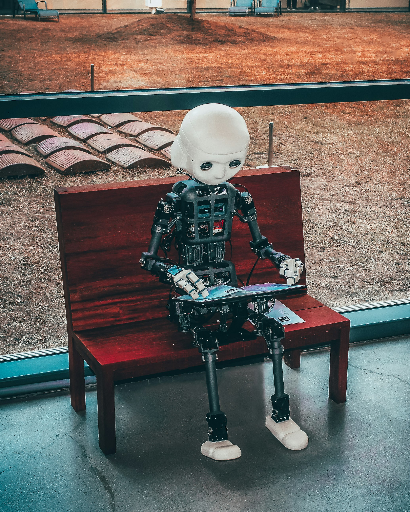

화려한 수백 개의 스킬 중 결국 살아남은 것은 '작업의 안정성 확보'와
'컨텍스트의 재사용성'을 극대화하는 시스템적 도구들이었다.
THE PITFALLS OF AI
AI는 전체 맥락을 무시한 채 불필요하게 많은 코드를 생성하거나 엉뚱한 곳을 수정하는 '할루시네이션과 과잉 실행'의 오류를 범하기 쉽습니다.
"단발성 프롬프트 위주의 사용은 매 세션마다 맥락을 다시 설명해야 하는 비효율을 낳습니다."
단순히 코딩을 대신 해주는 '도구'가 아니라,
선 계획, 후 실행, 그리고 테스트 주도를 강제하는
'워크플로우 거버넌스'가 필수적입니다.
CORE SKILLS 1-2
안드레 카파시가 작성한 4가지 핵심 규칙(Markdown).
모르는 상태에서 구현 시작 금지, 100줄짜리를 1000줄로 만들지 않기, 타겟 외 주변 코드 변경 금지 등을 강제하여 AI의 맹목적 실행을 통제합니다.
유튜브 영상의 프레임과 자막을 직접 분석하는 플러그인.
단순 URL 입력을 넘어, 영상의 시각적/청각적 컨텍스트를 클로드에게 제공하여 리서치와 구조 분석의 정확도를 비약적으로 높입니다.
CORE SKILL 3
가장 치명적인 '냅다 코드부터 짜는' 버릇을 고칩니다. 스펙 정의 → 계획 수립 → 테스트 코드 선 작성을 강제하는 TDD 워크플로우를 주입합니다.
"테스트를 작성하지 않으면 코드를 삭제해 버린다. 첫 결과물의 퀄리티가 60점에서 80점으로 올라가 디버깅 시간을 획기적으로 줄여준다."
// Superpowers Agent Workflow 1. Require clear specification 2. Propose implementation plan 3. Wait for user approval 4. Write tests FIRST (TDD) 5. Execute implementation 6. Run Review Agent (Spec match) 7. Run Review Agent (Code quality) 8. Finalize
CORE SKILLS 4-5
방대한 코드 베이스나 지식 저장소를 지식 그래프(Knowledge Graph)로 변환. 파일, 함수, 의존성 관계를 인터랙티브 대시보드로 시각화하여 처음 보는 아키텍처의 파악 시간을 단축시킵니다.
작업 이력을 로컬 DB에 자동 압축 및 저장. 벡터 검색을 통해 현재 작업에 필요한 정보만 골라서 주입함으로써, 불필요한 토큰 낭비 없이 완벽한 컨텍스트 연속성을 보장합니다.
CORE SKILL 6
매번 동일한 프롬프트를 반복 입력하는 것은 하수입니다. Skill Creator를 통해 자주 반복되는 업무를 독립된 패키지(스킬)로 만들어 지속적으로 재사용해야 합니다.
바이브 코딩(Vibe Coding)의 완성
조직 내 우수 성과자들의 프롬프트를 개별 노하우로 두지 말고, 전사적으로 재사용 가능한 '스킬 자산'으로 패키징하여 배포하는 사내 AI 스킬 라이브러리 생태계가 필요합니다.


"AI 도구의 진정한 가치는 나의 업무 방식에 맞게 최적화하고
이를 재사용 가능한 자산으로 만들 때 완성된다."